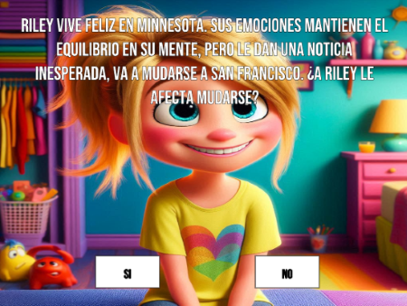
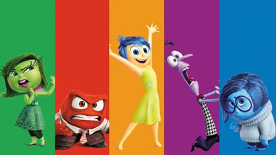
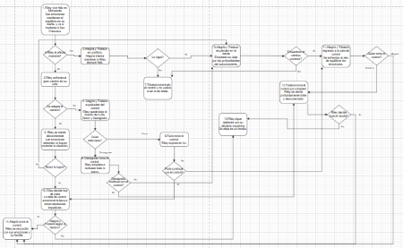
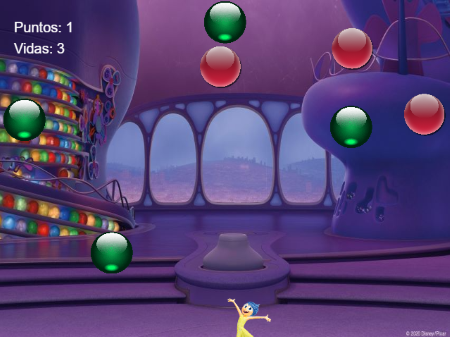

Somos dos alumnos de la carrera Diseño Multimedial, y creamos esta página web para mostrar y contar todo acerca de nuestro trabajo final en la materia “Programación para medios interactivos orientada a tecnologías web”. Decidimos basar nuestro proyecto en la película Intensamente, comenzamos con una Aventura Gráfica Interactiva donde el espectador pudiera cambiar el rumbo de la historia original con textos narrativos y opciones para elegir, y que así pudiera sentirse más parte de este mundo. Luego creamos un juego, con Programación Orientada a Objetos, donde el personaje principal sea Alegría y deba recolectar objetos, en este caso las esferas tan conocidas de la película.

Nuestro proyecto pudimos llevarlo a cabo mediante p5.js, para adentrarnos en el diseño y mundo narrativo de Intensamente.
VolverDecidimos utilizar la película “Intensamente” como temática, por su fama mundial y siendo una de las películas que marcó muchas infancias. Además de que su historia es muy interesante para crear una aventura donde se pueda cambiar el rumbo de la historia, ya que en la película tanto Riley como sus emociones deben tomar muchas decisiones, por esta razón nosotros decidimos que en este proyecto queden en manos del espectador, dándole 3 finales posibles a esta historia.
Resumen intensamente:
Las cinco emociones que conviven en el interior de una niña llamada Riley, alegría, miedo, desagrado, ira y tristeza, compiten por tomar el control de sus acciones cuando la pequeña se traslada, junto a su familia, a vivir a San Francisco. La adaptación a una nueva ciudad, una nueva escuela y unos nuevos compañeros no será sencilla para Riley.

VolverLa consigna en esta primera etapa era desarrollar y diseñar una aplicación web con formato de aventura gráfica interactiva. Creamos una página donde el espectador pueda tomar distintas decisiones sobre los momentos más claves acerca de la película de “Intensamente”, cambiando así el rumbo de la historia, y teniendo 3 finales diferentes, pero llegando a cualquiera de estos finales el espectador puede reiniciar la aventura, interactuando con ella las veces que lo desee.
Creamos esta aventura gráfica interactiva con p5.js, donde primero se nos pidió crear un diagrama acerca de la historia, donde estén los textos narrativos, las decisiones que se puedan tomar, y como es el desarrollo de la historia en las pantallas.
Además creamos las imágenes de fondo con IA, para representar cada decisión que se tome. Le agregamos la canción original de Intensamente que se reproduce oprimiendo el botón de comenzar, el sonido es para que el espectador pueda adentrarse más en la Aventura Gráfica y en su historia.
Incluimos arreglos para cargar las imágenes y textos narrativos, utilizamos un método para que las pantallas pasen de una a otra, oprimiendo los botones de SI o NO, y al llegar a uno de los finales, se pueda oprimir el botón de Reiniciar, para volver a la pantalla de inicio con los créditos, y poder comenzar la aventura de nuevo.
La consigna era crear un video juego en base a la película que habíamos elegido. Primero antes de crearlo, pensamos en que se iba a basar nuestro video juego, y decidimos que el personaje principal deba recolectar y esquivar objetos, como personaje elegimos a Alegría ya que muchos obstáculos de la Aventura Gráfica eran en base a situaciones de esta emoción, como objetos decidimos utilizar un elemento esencial en la película, que eran las esferas o recuerdos de Riley.
Creamos las instrucciones donde el jugador debía controlar a Alegría mediante el mouse, dependiendo las esferas que recolecte aumenta los puntos o pierde vidas, haciendo que si llega a 20 esferas verdes recolectadas gana, y si llega a 3 esferas rojas recolectadas pierde, pero al final pudiendo oprimir una tecla para reiniciar el juego.
Además agregamos nuevamente sonido e imágenes para una mejor experiencia.
Separamos nuestro código en clases, para las vidas, los puntos, las esferas, las instrucciones y para el juego.
Gracias a este proyecto aprendimos acerca de la programación gráfica y orientada a objetos, y a crear un trabajo de interactividad que funcione correctamente y que además el espectador pueda tener la mejor experiencia posible.
Volver